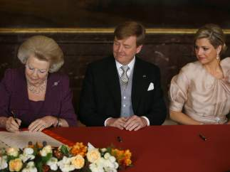

INTERNACIONAL


INTERNACIONAL
Beatriz de Holanda abdica en su primogénito, Guillermo Alejandro, que ya es rey de los Países Bajos
Reina Beatriz firmando su abdicación
La corona holandesa ha cambiado este martes de propietario: la reina Beatriz de Orange, monarca de los Países Bajos desde hace 33 años, ha pasado el testigo de la jefatura de Estado a su hijo, Guillermo, que se ha convertido a sus 46 años en el rey más joven de las monarquías occidentales, bajo el nombre de Guillermo Alejandro.
A las 10.00 horas de la mañana la reina Beatriz firmará el acta de abdicación, un documento en que también pondrán su rubrica su hijo y su esposa Máxima, que llevará el título de reina consorte.
El acto tendrá lugar en el Palacio Real de Amsterdam y tras la ceremonia Beatriz, Guillermo Alejandro y Máxima, así como sus tres hijas, saldrán a saludar al balcón que da a la céntrica plaza Dam, donde los ya nuevos reyes de los Países Bajos se darán su primer baño de masas ante las 25.000 personas previstas.
La ceremonia de investidura tendrá lugar sobre las 13.30 horas en la Iglesia Nueva (Nieuwe Kerk), donde acudirán todas las delegaciones reales invitadas, incluida una treintena de príncipes herederos que tomarán nota de la ceremonia de hoy.

Comentarios
Invitado324
Gran artículo